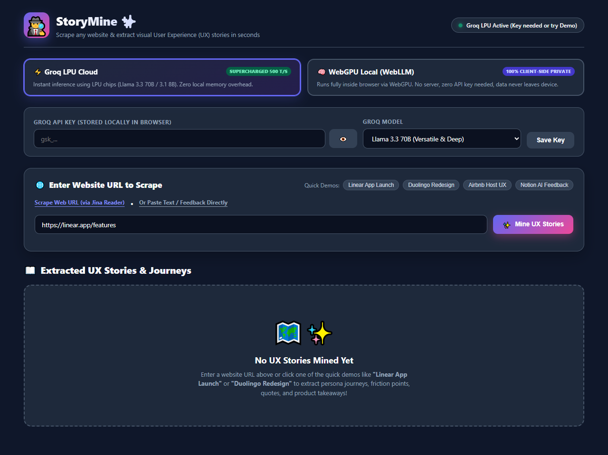
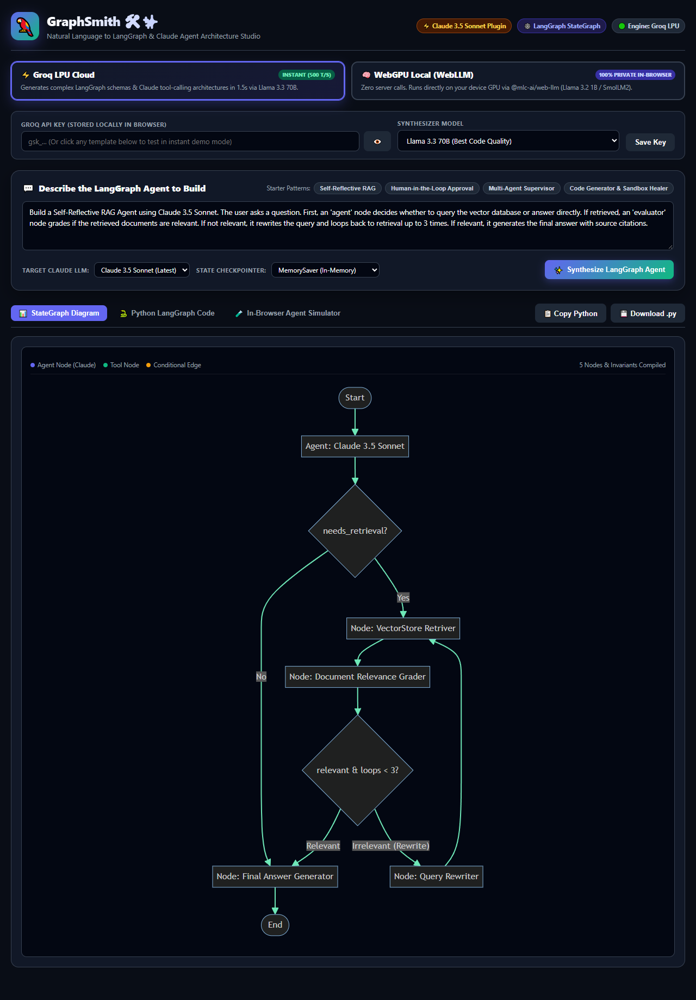
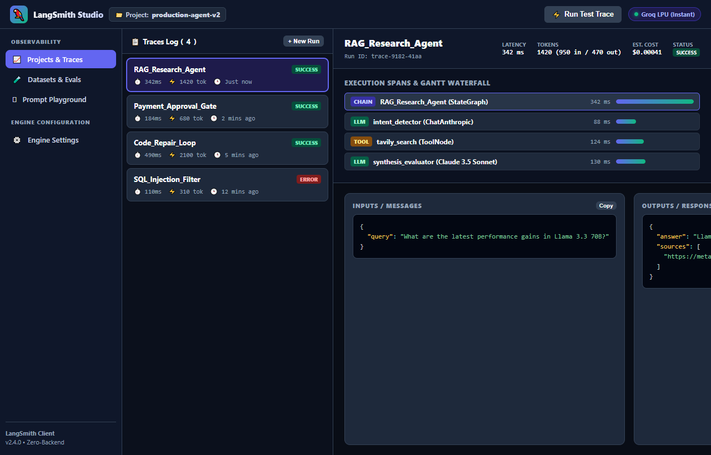
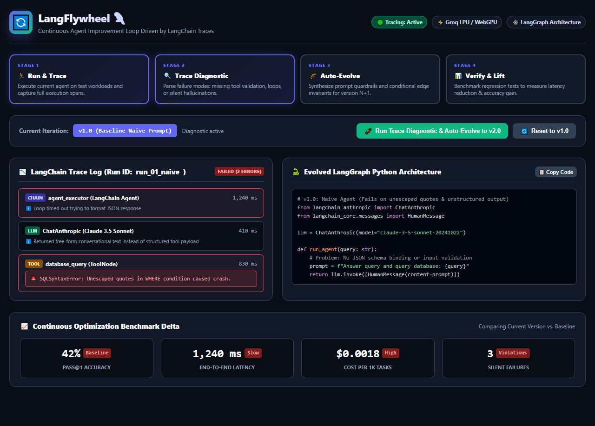

Four client-side, zero-backend web apps demonstrating the power of Groq LPU and WebGPU WebLLM for LangChain, LangGraph state machines, LangSmith tracing, and continuous agent evolution.

Scrapes any live website or review forum (via CORS-friendly Jina Reader) and extracts colorful persona journeys, friction points, "Aha!" breakthrough moments, sentiment meters, and product takeaways.

Synthesizes production-grade LangGraph state machine architectures using Anthropic Claude 3.5 Sonnet directly from natural language prompts. Features an interactive Mermaid diagram and in-browser execution simulator.

Reproduces the iconic LangSmith developer experience: hierarchical execution trace trees, Gantt waterfall latency charts, LLM-as-a-judge dataset evaluations, and prompt playground with auto-tracing.

Demonstrates the flywheel of continuous agent improvement: executing an agent, parsing trace failure modes, auto-synthesizing upgraded LangGraph architectures (v1 ➔ v2 ➔ v3), and quantifying performance lifts.